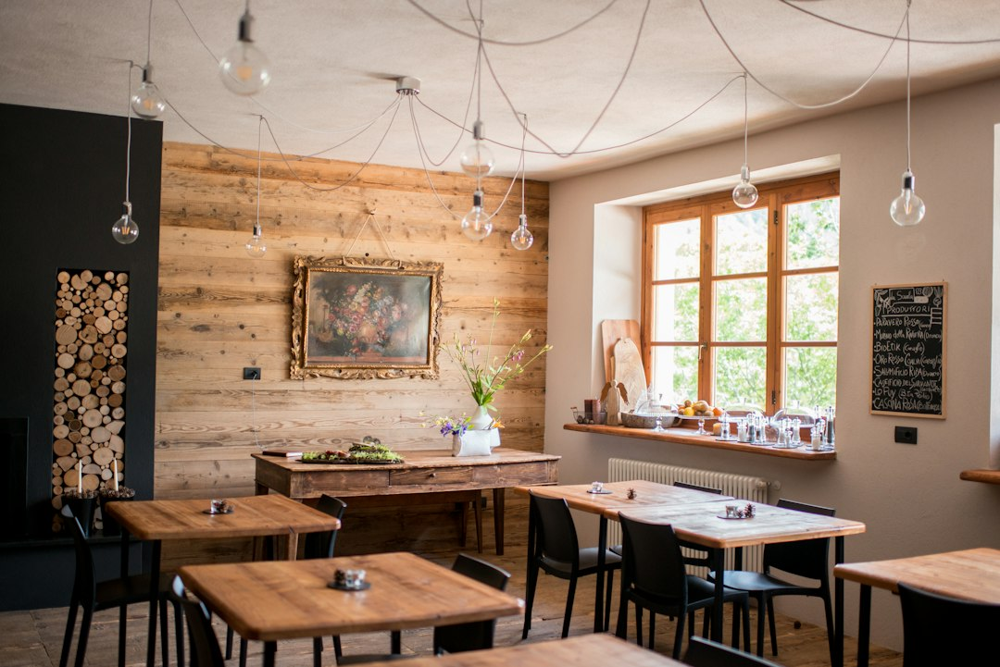

Ristorazione 2024-2026: Digitalizzare Menu e Social con Locanda Digitale, la Rivoluzione AI per Chef e Titolari

Ristorazione 2024-2026: Come Locanda Digitale sta rivoluzionando menu, comunicazione e social per Trattorie e Pizzerie Gourmet
- La digitalizzazione dei menu e dei contenuti visivi diventerà cruciale per emergere nei prossimi 24 mesi.
- Menu cartacei di solo testo e contenuti social poco coinvolgenti riducono l'attenzione e il ricavo.
- Locanda Digitale utilizza AI e video 3D per creare esperienze immersive senza costi proibitivi o abbonamenti.
Analisi approfondita della notizia e delle implicazioni operative
Il settore della ristorazione sta attraversando una fase di profonda trasformazione spinta dall’adozione sempre più ampia delle tecnologie digitali. Nei prossimi 24 mesi, la capacità di comunicare efficacemente la qualità e la genuinità dei piatti rappresenterà una leva strategica per attrarre e fidelizzare i clienti, soprattutto in un contesto altamente competitivo come quello delle trattorie, pizzerie gourmet e agriturismi.
La notizia recente evidenzia come i menu cartacei tradizionali, spesso limitati al solo testo, stiano diventando progressivamente meno efficaci. I clienti digitalizzati cercano un’esperienza visiva coinvolgente anche prima di ordinare, e i social media, oggi strumento indispensabile per la promozione, richiedono contenuti visivi di alto impatto per emergere nel feed e stimolare l’appetito. Tuttavia, i costi associati alla produzione video professionale di qualità sono ancora proibitivi per molte realtà medie e piccole del settore.
Questo scenario impone una riflessione sulle modalità di innovazione: l’utilizzo di tecnologie AI e formati video avanzati è la chiave per modernizzare l’immagine del ristorante senza pesare pesantemente sul budget operatore.
Le conseguenze e i costi di non agire
Mantenere un menu cartaceo di solo testo significa esporsi a una progressiva perdita di attenzione da parte del cliente, sempre più abituato a un’interazione digitale multisensoriale. Questo si traduce in una riduzione degli ordini motivati da un mancato coinvolgimento visivo e comunicativo.
Inoltre, la difficoltà nel comunicare la qualità e l’unicità dei piatti sui social si traduce in opportunità promozionali inefficaci, limitando la capacità di raggiungere un pubblico più ampio e, soprattutto, più giovane. I contenuti statici o amatoriali non generano engagement né passaparola, fondamentali nel settore ristorativo.
Per i ristoratori che tentano di avvalersi di videomaker professionali, i costi sono spesso elevati e ricorrenti, incidendo significativamente sul budget e rallentando l’aggiornamento costante dei contenuti richiesto dai social network. L’assenza di soluzioni native digitali rende la comunicazione lenta, inefficace e costosa, alimentando un circolo vizioso con potenziali perdite economiche.
Come Locanda Digitale risolve il problema
Locanda Digitale di RM Studio emerge come una soluzione tecnologica naturale al problema, integrando in una suite AI dedicata tutte le funzioni indispensabili per la ristorazione moderna. Questo SaaS consente ai titolari di trattorie, pizzerie gourmet e agriturismi di trasformare il menu cartaceo ignoto in un’esperienza digitale accattivante e visivamente ricca, eliminando l’obsolescenza comunicativa.
Grazie a Locanda Digitale, è possibile creare spot video 3D verticali 9:16 a 60 FPS partendo dalle foto reali dei piatti, una soluzione che coniuga qualità cinematografica e semplicità d’uso. Il software non richiede competenze tecniche avanzate né investimenti in costose produzioni video tradizionali, abbattendo così le barriere economiche.
La digitalizzazione del menu cartaceo con fotografie HD integrate e QR Code posizionati direttamente al tavolo ottimizza la customer experience: il cliente può visualizzare immagini realistiche di ogni portata sullo smartphone, aumentando desiderio e consapevolezza alla scelta.
Inoltre, Locanda Digitale permette un aggiornamento dinamico e immediato, adattandosi a cambi stagionali, menù speciali o nuove proposte con pochi clic, senza costi aggiuntivi di stampa o produzione esterna.
| Aspetto | Gestione Tradizionale | Con Locanda Digitale |
|---|---|---|
| Menu cartaceo | Solo testo, poco attrattivo, aggiornamenti costosi | Fotografie HD integrate, aggiornamento digitale immediato tramite QR Code |
| Promozione Social | Foto amatoriali o statiche, basso engagement | Video 3D verticali a 60 FPS, coinvolgenti e professionali, senza costi elevati |
| Costi produzione contenuti | Videomaker professionali costosi, tempi lunghi | Investimento unico one-time, nessun abbonamento, produzione interna con AI |
| Aggiornamenti menu | Ristampe frequenti, costi e sprechi | Modifiche digitali istantanee, sostenibilità e flessibilità |
💡 Ti è stato utile questo approfondimento?
Condividilo con un collega o un amico del settore Ristoratori, Chef, Titolari di Trattorie, Pizzerie Gourmet e Agriturismi a cui potrebbe interessare!
FAQ - Domande frequenti per Ristoratori e Chef
1. Quanto tempo occorre per digitalizzare il menu con Locanda Digitale?
La suite AI permette di trasformare foto e testi in un menu digitale completo e facilmente accessibile tramite QR Code in poche ore, senza necessità di personale specializzato.
2. È necessario un abbonamento mensile per utilizzare Locanda Digitale?
No, Locanda Digitale prevede un prezzo one-time con i pacchetti Social 3D Starter a €79 e Visual Menu Pro a €149, senza costi ricorrenti o vincoli di abbonamento.
3. Posso aggiornare il menu e i contenuti video quando voglio?
Sì, basta caricamento rapido delle nuove foto o modifiche al testo; la piattaforma aggiorna immediatamente il menu digitale e i video correlati senza costi aggiuntivi.
Inizia Subito
Social 3D Starter a €79 una tantum o Visual Menu Pro a €149. Nessun abbonamento.
Fonti Ufficiali e Risorse Esterne
Scopri l'Intelligenza Artificiale per la tua attività
Ottimizza i processi e aumenta le vendite con le soluzioni B2B di RM Studio.
Scopri Locanda Digitale